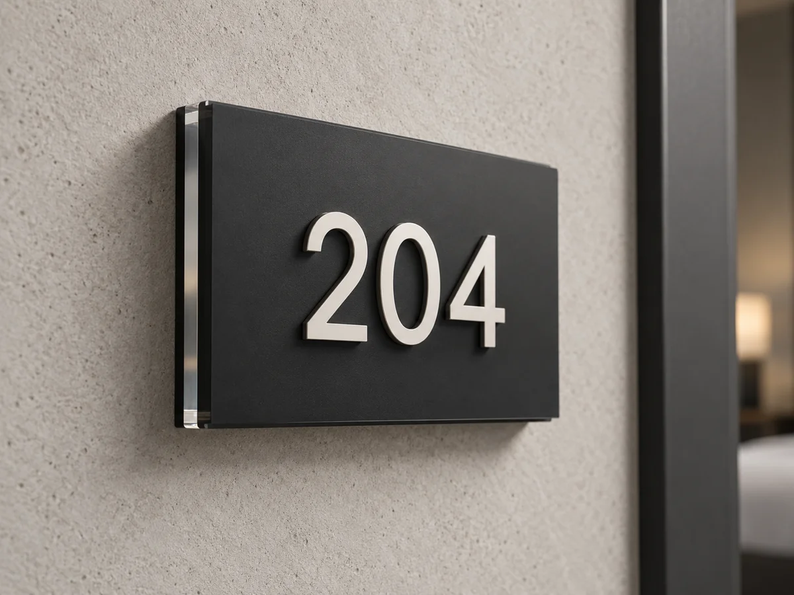
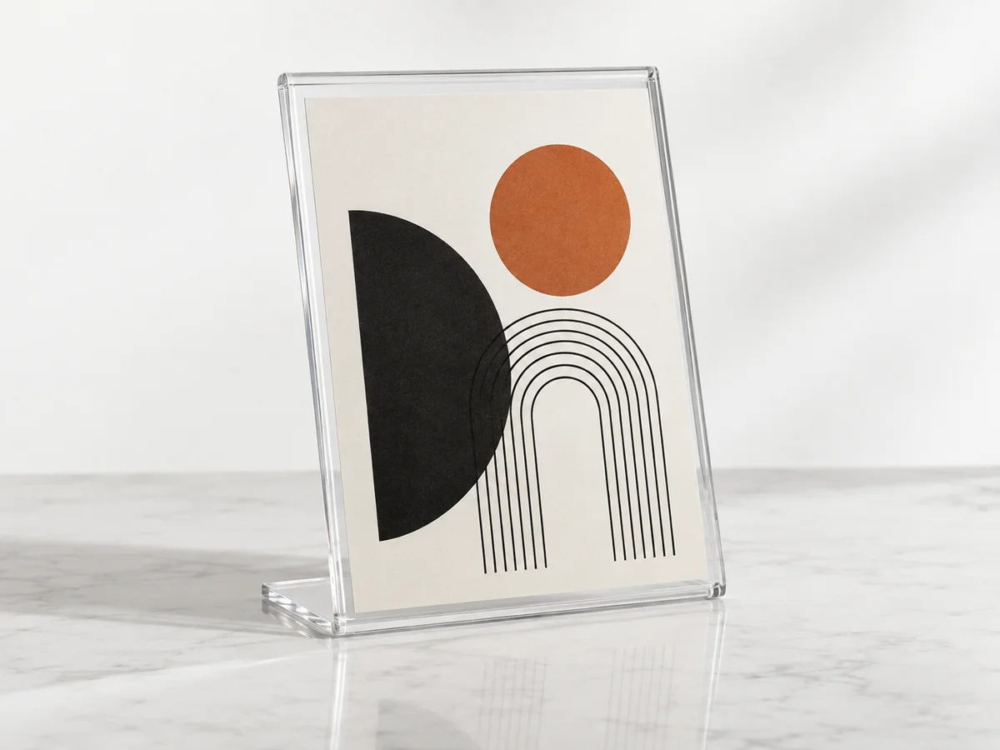
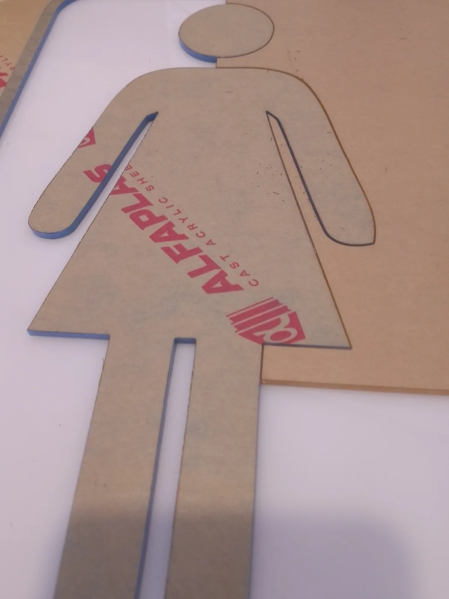

Bávaro–Punta Cana · República Dominicana
Diseño que
toma forma.
Diseño gráfico, rotulación y fabricación personalizada para tu negocio.
Ideas, materiales y producción.

Trabajos realizados
Piezas que hablan
por tu negocio.

01 / Capacidades
Soluciones a medida.
Del diseño gráfico a los elementos físicos que tu espacio necesita.
Rotulación y publicidad gráfica
Aplicaciones gráficas y elementos de identificación para comunicar tu negocio.
Explorar solución ↗Señalización e identificación
Piezas para orientar, numerar e identificar áreas en hoteles, obras y negocios.
Explorar solución ↗Acrílico y fabricación personalizada
Diseño y fabricación de elementos personalizados, con corte y grabado láser CO₂ según el material y el proyecto.
Explorar solución ↗Diseño gráfico aplicado
Soluciones gráficas pensadas para su aplicación, sus materiales y su contexto.
Explorar solución ↗02 / Productos
¿Qué necesitas fabricar?
Números de habitación
Identificación para espacios de alojamiento.
Ver detalles ↗
AcrílicoExhibidores en acrílico
Presenta información en recepción, mesas o mostradores.
Ver detalles ↗
Fabricación a medidaPlacas personalizadas
Una pieza para identificar y comunicar.
Ver detalles ↗03 / Para tu negocio
Diseñado para tu espacio.

04 / El taller
Del diseño a la
pieza terminada.
Diseño y fabricación de soluciones físicas, con materiales y procesos adecuados a cada proyecto.
Instalación disponible, evaluada y cotizada según el trabajo y la ubicación.
Conocer el tallerEmpecemos por tu idea
Cuéntanos qué necesitas fabricar.
Una referencia, unas medidas o una idea son un buen comienzo.